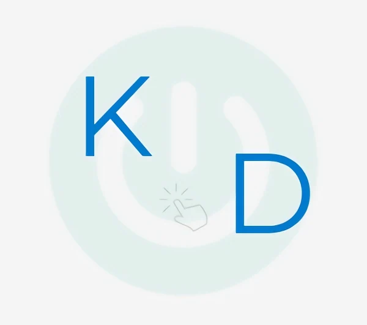

Business Systems & Operational Intelligence Analyst
I don’t just analyze data or use tools. I design, build, and deploy production-grade operational systems that deliver measurable business impact.
I don't stack tools. I stack live production systems that drive real results.
Live Production Systems
Penafort Inventory Monitor
36,000+ SKUs • Live
Real-time inventory intelligence with FEFO risk scoring, anomaly detection via pg_cron, and multi-branch optimization. Prevents major expiry losses and optimizes working capital.
LASU Market Penetration Intelligence Platform
₦1.7M Campaign • Live
Real-time market entry system with conversion tracking, department analytics, CPA/CAC monitoring, CLV modeling, and loyalty infrastructure.
MZIMS — MuzoScents Custom ERP
₦900k Revenue (Zero Ad Spend)
Autonomous inventory, order management, and operational intelligence system that scaled business profitability.
Kevs Digital Business Concierge & Growth Advisor
RAG-powered AI systems with strategic frameworks and strict deterministic governance for reliable business decision support.
About Me
My foundation in computer science shapes how I approach business problems. I build reliable, production-grade systems that bridge strategy and execution.
From managing 36,000+ SKU inventory platforms to designing live market intelligence systems with hybrid AI, I focus on creating low-maintenance solutions that deliver measurable results with full auditability and governance.
I am passionate about turning complex operational challenges into intelligent, scalable systems that businesses can trust.
Engineering Philosophy
I build deterministic, auditable systems that combine the intelligence of AI with strict business logic and governance.
AI is a powerful tool — but it must be controlled. I design hybrid systems where every AI output is validated against clear rules, ensuring reliability, explainability, and real business value.
Technology should serve strategy, not the other way around.